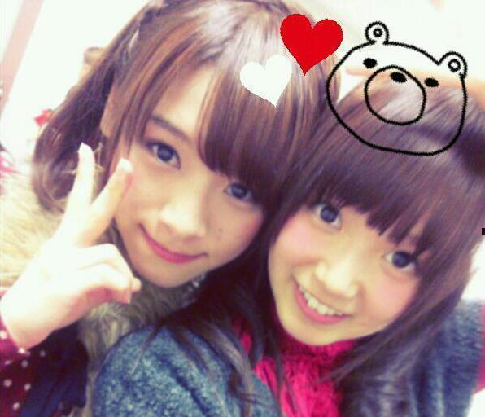
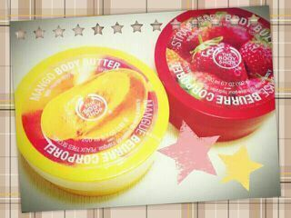
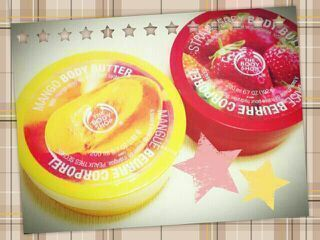

| 2012/11 11 Sun | ひめたん(*>ω<*)そ の232 |

今日ちまに
「うしろむいてー」
「10秒数えてー」て言われたから
うしろ向いて10秒数えたのー
「...じゅう！数えたよー。何ー？」
「えーそれだけー＊ふふふ」
んだとごるぁ(´・ω・｀)てへ
最近ちまはそーやって
ひめたんのこといじってくるのー
あたしのがとーしーうーえっ
んもうねーかわういでしょ(*´ω`*)///
ほんとにちま大好きよ。
ひなちまってるぜーおーいえあー

最近のマッサージのおともだよー
body shopのだよ(*^ω^*)
あのねもうちょっとでね
このケースいっこ使い終わりそうなの
すごいしょー？ふふふっ
今日ちまに
「うしろむいてー」
「10秒数えてー」て言われたから
うしろ向いて10秒数えたのー
「...じゅう！数えたよー。何ー？」
「えーそれだけー＊ふふふ」
んだとごるぁ(´・ω・｀)てへ
最近ちまはそーやって
ひめたんのこといじってくるのー
あたしのがとーしーうーえっ
んもうねーかわういでしょ(*´ω`*)///
ほんとにちま大好きよ。
ひなちまってるぜーおーいえあー

最近のマッサージのおともだよー
body shopのだよ(*^ω^*)
あのねもうちょっとでね
このケースいっこ使い終わりそうなの
すごいしょー？ふふふっ

 おいシャンの大阪の全握の時に行ったけど、覚えているかな？？
幕張の全握いったけど覚えてくれた？
おいシャンの大阪の全握の時に行ったけど、覚えているかな？？
幕張の全握いったけど覚えてくれた？
できるだけ頑張って覚えてるつもりだよ(｀・ω・´)
でもひめたんは神様じゃないから、100%ってわけにはいかないんだよね...
だから、時間かかっても頑張って覚えるから怒らないでねー(´;ω;`)
兵庫県のイメージ教えてーっ!
姫路城＼(^^)／
ひめたんがいったときは改装工事してたからね。
いつか工事終わったらまた見に行きたいなー♪
ひめたんは栃木に来たことある？
ないーと思う！
行きたいいきたーい＼(^^)／
何歳くらいで結婚したい?
わーっからーああああん(*>ω<*)てへ
ひめたんの事を考えたら勉強もあんまり落ち着かないしひめたん好きすぎて朝起きてから夜寝るまでひめたんの事を考えます
ひめたんと会えなくてとても残念 どうすればいいですか？
あと握手会いけたらビーム浴びせてください後お話しできる限りしたいないいかな？
わーなんか嬉しいぞー(｀・ω・´)
ありがとう///てへぺろってぃーよ///
どうすればいいんだろうね。
もう限界ってなったらコールしてねー飛んでいくからさ。ね？
お話しようそうしようー∩^ω^∩
楽しみにしてるね♪
ひめたんがまだ行ったことのない県はどこカナ？←
いっぱいあるよー(´;ω;`)
何歳で全制覇できるかなあー
夏の北海道と冬の沖縄に行きたい！
ひめたんの一押しのものってある？
ボディクリーム＊
中でもイチゴの香りのやーつ∪・ω・∪
それでは最後に
ひめたんのおともだちの那奈ちん発案の
早口言葉でお別れしましょう。
みんな言えるかな(ω)せーのっ
／
つらめろりーぬっち
つらめろりーぬっち
つらめろりーぬっち
＼

(＊´・ω・＊)ひめたん
コメント(136)
2012/11/11 23:54